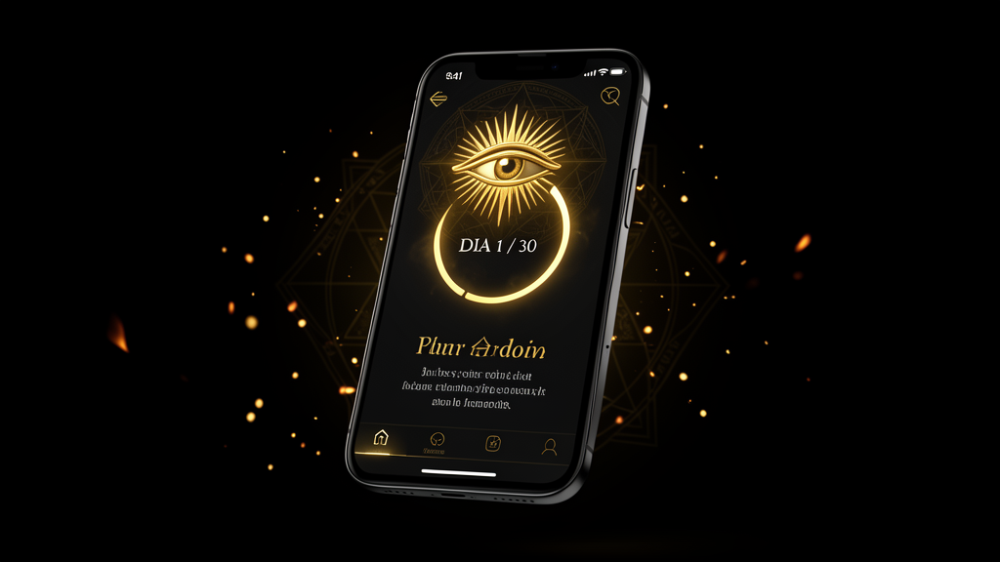
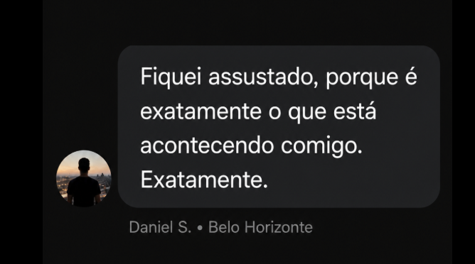
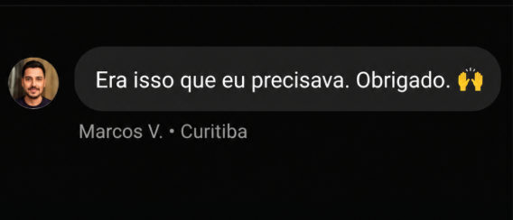
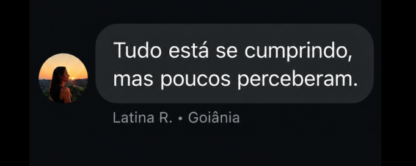

🔒 Assista o vídeo · o dossiê abre em seguida
Você acorda já cansado. O corpo dormiu, mas alguém não desligou. Tem um aperto no peito que chega antes do café e não vai embora — e você não sabe o nome dele. Você anda preferindo o silêncio: parou de atender, parou de explicar, é mais fácil sozinho. E no fundo você sente: algo está errado. Não com você. Com tudo. Você só ainda não viu o quê.

Isto não é curso. Curso é o mesmo balde de água jogado em mil cabeças diferentes — eles te vendem fôrma e chamam de caminho. O teu protocolo nasce dentro de você: do que te prende, do que te trava, da corrente que ninguém te deixou ver. Feito pra você. Somente pra você.
O do teu vizinho começa diferente. O teu começa onde dói. Dois homens, dois caminhos — nunca o mesmo mapa.
Não é mágica. É a corrente caindo, elo por elo.
A ansiedade ganha nome e ganha dono. Você dorme pior nessa noite — porque pela primeira vez está acordado.
Você enxerga o roteiro: quem escreveu, quem lucra, o que esconderam. O cansaço afrouxa no minuto em que você para de lutar contra um fantasma.
As 3 chaves giram: corpo, mente, espírito. Você respira fundo de novo, o sono volta, e o buraco do isolamento fecha. Não é remédio. É religação.
Você se olha no espelho e o cansado sumiu: quem está ali é o vigia. A ansiedade virou radar, o isolamento virou trincheira, a revolta virou ordem.
Não foi Deus que apagou a luz — fomos nós, quando demos ouvido à serpente. Mas a porta nunca trancou por dentro. A saída tem nome, e o nome é Jesus.



Mais de um milhão acompanham a investigação. A maioria assiste e segue dormindo. Uma minoria atravessa a porta.